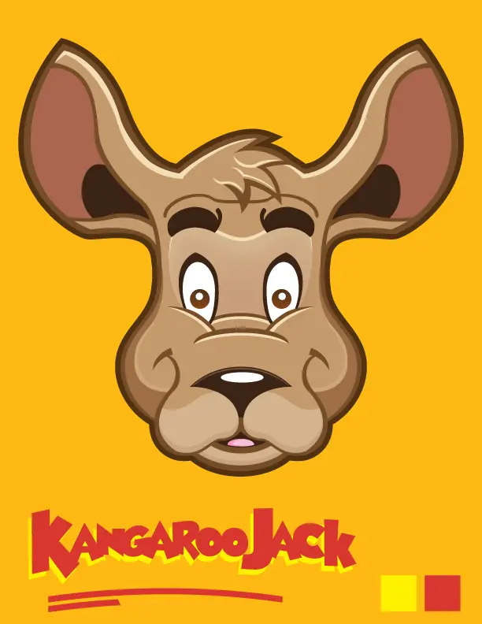
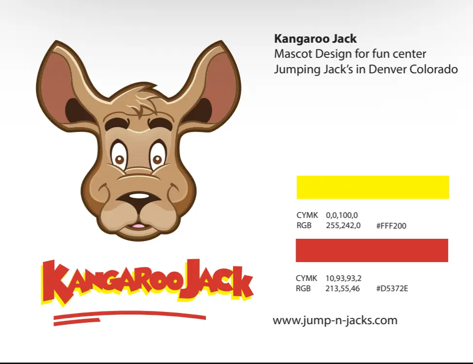

Mascot Design
Kangaroo Jack
A custom mascot created for Jumping Jack’s fun center in Denver, Colorado.
Back To CharactersMain Character
Built For Energy And Recognition

Identity Development
Character, Wordmark And Color
The oversized ears and friendly expression make Kangaroo Jack feel welcoming, while the playful wordmark and bright colors match the energy of the fun center.

Character Applications
Mascot Suite